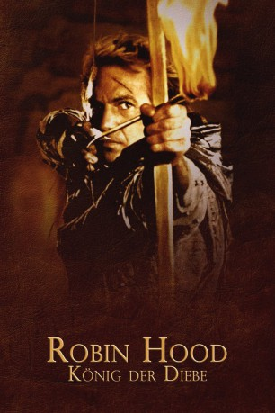
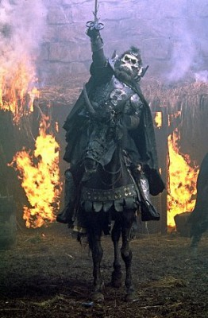
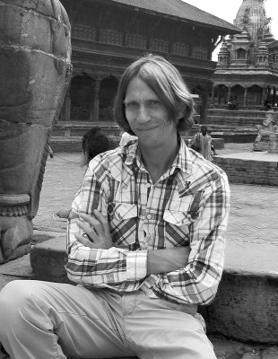

#5904 Robin Hood - König der Diebe
Alternativ: Robin Hood: Prince of Thieves
Auszeichnungen: für 1 Oscars nominiert 1 BAFTA-Awards gewonnen
 
 IMDB-Wertung: 6.9 / 10
IMDB-Wertung: 6.9 / 10  Metascore: 0
Metascore: 0 
Robin Hood entkommt in Arabien der Gefangenschaft während des ersten Kreuzzugs und befreit gleichzeitig den Mohammedaner Azeem der ihm nun sein Leben schenkt. Nach England zurückgekehrt, findet Robin seinen Vater ermordet und seine Ländereien vom Sheriff von Nottingham beschlagnahmt vor. Notgedrungen zieht der Adlige in den Sherwood Forest, wo er bald die ersten Getreuen um sich sammelt. Und er trifft die hübsche Marian. Doch der Kampf gegen den Sheriff ist unausweichlich ...
Jahr: 1991
Dauer: 155 Minuten
FSK: 12
Land: USA Studio: Warner Bros.Tonspuren: DD5.1 - ,
Untertitel:
Auflösung: 1080p (1920x1080) Größe: 16486 MB
Genre: Action, Drama, Abenteuer, Liebe
Regisseur:  Kevin Reynolds
Kevin Reynolds
Drehbuch: Ted Lewis
Soundtrack:
Darsteller:
 Kevin Costner als Robin Hood
Kevin Costner als Robin Hood Morgan Freeman als Azeem
Morgan Freeman als Azeem Mary Elizabeth Mastrantonio als Marian Dubois
Mary Elizabeth Mastrantonio als Marian Dubois Christian Slater als Will Scarlett
Christian Slater als Will Scarlett Alan Rickman als Sheriff George of Nottingham
Alan Rickman als Sheriff George of Nottingham Geraldine McEwan als Mortianna
Geraldine McEwan als Mortianna Michael McShane als Friar Tuck
Michael McShane als Friar Tuck Brian Blessed als Lord Locksley
Brian Blessed als Lord Locksley Michael Wincott als Guy of Gisborne
Michael Wincott als Guy of Gisborne Nick Brimble als Little John
Nick Brimble als Little John- Jack Wild als Much the Miller's Son
- Liam Halligan als Peter Dubois
- Marc Zuber als Interrogator
 John H. Francis als Courier
John H. Francis als Courier John Hallam als Red-Headed Baron
John Hallam als Red-Headed Baron-  Pat Roach als Celtic Chieftain
- Andrew Lawden als Sergeant
 Christopher Adamson als Soldier
Christopher Adamson als Soldier Richard Strange als Executioner
Richard Strange als Executioner- Bryan Adams als The Balladeer , uncredited
- Behrooz Afrakhan als Moezin , uncredited
- David Bowles als Morgar , uncredited
-  Kenneth W Caravan als Norman Knight - Merry Man , uncredited
 Sean Connery als King Richard , uncredited
Sean Connery als King Richard , uncredited Lucien Morgan als Captain of the Sherrif's Men , uncredited
Lucien Morgan als Captain of the Sherrif's Men , uncredited- Graham Riddell als Celtic Warrior , uncredited
- Soo Drouet als Fanny
- Daniel Newman als Wulf
- Daniel Peacock als Bull
- Walter Sparrow als Duncan
- Harold Innocent als Bishop of Hereford
- Michael Goldie als Kenneth of Cowfall
- Merelina Kendall als Old Woman
- Imogen Bain als Sarah
 Jimmy Gardner als Farmer
Jimmy Gardner als Farmer- Bobby Parr als Villager
- Douglas Blackwell als Gray-Bearded Baron
- Andy Hockley als Ox
- John Dallimore als Broth
- Derek Deadman als Kneelock
- Howard Lew Lewis als Hal
- John Tordoff als Scribe
- Susannah Corbett als Lady in Coach
- Sarah Alexandra als Small Girl
- Mickey Curry als The Balladeer's Drummer & Percussionist , uncredited
- Larry Klein als The Balladeer's Bassist , uncredited
- Bill Payne als The Balladeer's Keyboardist , uncredited
- Derek Pykett als Peasant in Crowd , uncredited
- Neil Riddaway als Villager , uncredited
- Keith Scott als The Balladeer's Lead Guitarist , uncredited
Datei: X:\1991\Robin Hood - König der Diebe (1991, FSK12, 1920x1080).mkv seit 03.04.2017
Festplatte: HD 1987-1991
 Es gibt insgesamt 53 Filme in der Gruppe '1991'
Es gibt insgesamt 53 Filme in der Gruppe '1991'